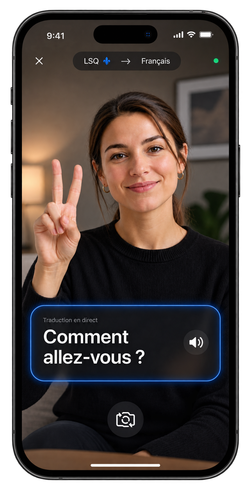

LSQ → Français
Les signes
deviennent
des mots.
Sensorielle traduit la langue des signes du Québec en français, en temps réel, à partir d'une simple caméra.
- Temps réel
- Précis et sécurisé
- Conçu au Québec
Construit avec et pour la communauté

Sensorielle apprend
un signe à la fois.
Tu connais la LSQ ? Aide-nous à construire son vocabulaire.
Quelques secondes suffisent pour contribuer.
Simple, rapide, humain.
Montrez.
La caméra détecte les signes.
Sensorielle lit.
Le système analyse le mouvement.
Vous comprenez.
La traduction apparaît instantanément.
Essaie-le maintenant.
Autorise la caméra et fais un signe.
Teste les prochaines versions.
Laisse ton courriel et sois parmi les premiers à essayer les nouvelles avancées de Sensorielle.
Notre point de départ
La langue ne devrait
jamais être une barrière.
On commence avec la LSQ.
Ce que Sensorielle reconnaît déjà.
Un vocabulaire honnête, qui grandit avec la communauté.
Construit au Québec.
Sensorielle est un projet indépendant actuellement en développement.
Nous cherchons des personnes, organismes et partenaires qui veulent contribuer à la suite.
Nous contacter →